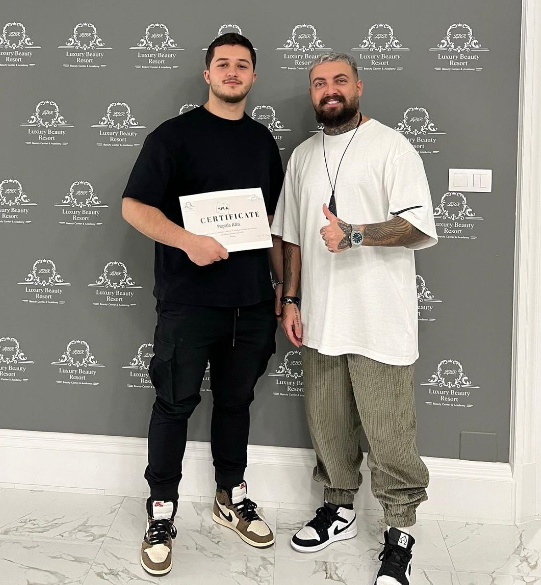
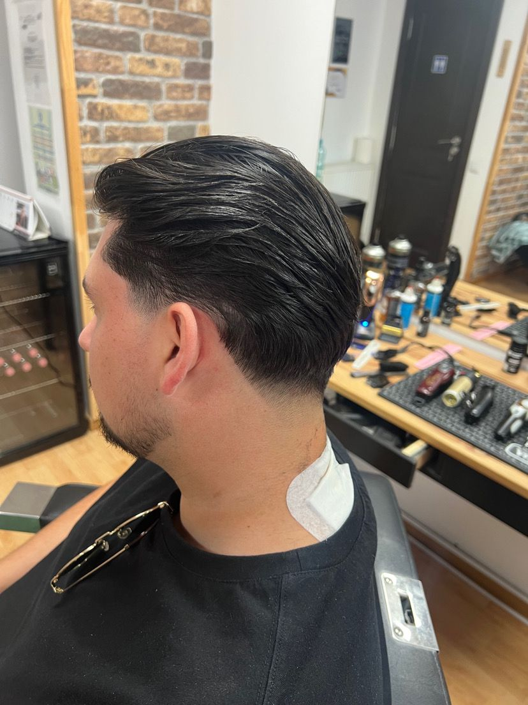
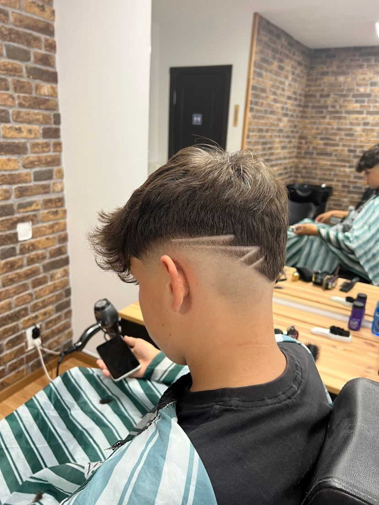
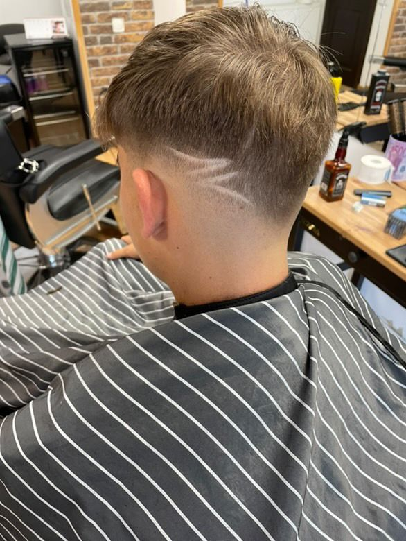
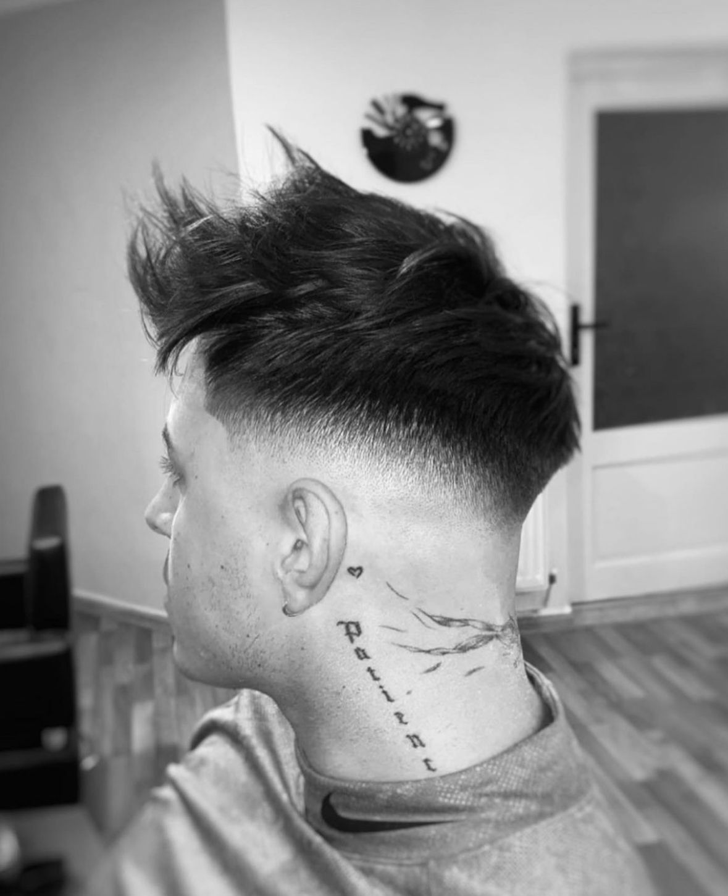

A&M Barbershop
A&M BarbershopALIN
Proprietar & Fondator
Cu o experiență de peste 10 ani în domeniul hairstyling-ului, Alin este un expert în tunsori clasice și moderne, fiind recunoscut pentru atenția sa la detalii și abilitatea de a personaliza fiecare stil în funcție de personalitatea clientului.
PORTOFOLIU
Iată câteva din lucrările efectuate de Alin pe parcursul timpului



